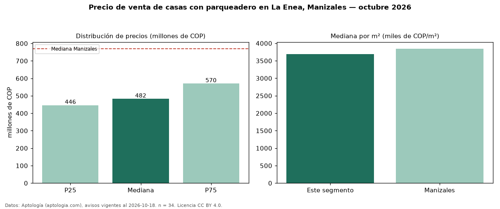

Precio de venta de casas con parqueadero en La Enea, Manizales — octubre 2026
Con 34 avisos vigentes, el precio mediano de casas con parqueadero en venta en La Enea, Manizales es COP 482 millones. Prácticamente coincide con la mediana de todas las casas en venta de La Enea (COP 470 millones, n = 67); este segmento reúne el 51 % de esos avisos. Por metro cuadrado, la mediana es COP 3,69 millones/m² (n = 34), 1 % por debajo del conjunto de referencia (COP 3,75 millones/m²). El área mediana anunciada es 138 m². El segmento con más oferta es el de 3 o más habitaciones (33 avisos, mediana COP 485 millones). El estrato más frecuente es 3 (56 % de los avisos con estrato). La mediana de todas las casas en venta de Manizales es COP 770 millones (−37 % de diferencia). La mitad central de los avisos va de COP 446 millones a COP 570 millones (razón 1,3), una dispersión baja. Datos: Aptología (aptologia.com), CC BY 4.0 — https://www.aptologia.com/casas-en-venta/manizales/la-enea. Archivos: PDF, CSV con las cifras y gráfica PNG.

| Avisos únicos | 34 |
|---|---|
| Percentil 25 | COP 446.250.000 |
| Mediana | COP 482.500.000 |
| Percentil 75 | COP 570.000.000 |
| Mediana por m² | COP 3.694.047 |
Fuente: avisos vigentes de portales inmobiliarios recopilados por Aptología, deduplicados (mínimo 30 avisos únicos por celda). Precios pedidos, no cerrados. Fecha: 2026-10-18.